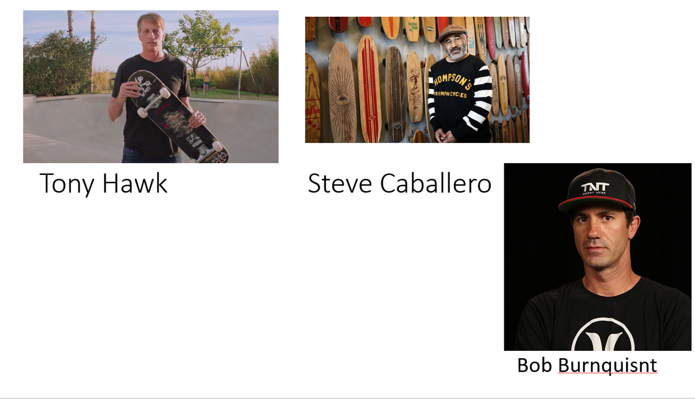

| Name |
Achievement |
| 1) Tony Hawk |
Also known as the "The Birdman" Tony Hawk has become the most infulential skater of modern-day.Hawk haw won 12 National Skateboard Association titleholder and winner of numerous other awards. One of his biggest achievement is the first man to ever complete 900 flips. |
| 2) Bob Burnquisnt |
Bob Burnquisnt is a pro-Brazillian skateboarder and one of the most famous ones. Bob has went to 52 X-games competitions and won 26 medals. One of his most dangerous stunt was successfully landing a fifty-fifty landing into the Grand Canyon. Hes also the first person to ever land a fakie 900. |
| 3) Steve Caballero |
Steve Caballero was born with scoliosis a condition which causes his spine to have a curve. Despite this he kept on skating on. He was inventor of the fakie 360 aerial, and the frontside boardslide. In 1987 he set the world record for highest air achieved on a half pipe which was 11 feet. |
